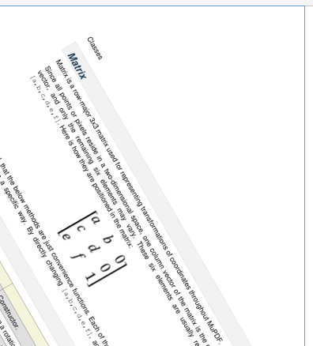

Matrix¶
Matrix is a row-major 3x3 matrix used by image transformations in MuPDF. With matrices you can manipulate the rendered image of a page in a variety of ways: (parts of) the page can be rotated, zoomed, flipped, sheared and shifted by setting some or all of just six numerical values.
Since all points or pixels live in a two-dimensional space, one column vector of that matrix is a constant unit vector, and only the remaining six elements are used for manipulations. These six elements are usually represented by [a,b,c,d,e,f]. Here is how they are positioned in the matrix:
It should be noted, that
- the below methods are just convenience functions - everything they do, can also be achieved by directly manipulating
[a,b,c,d,e,f]- all manipulations can be combined - you can construct a matrix that does a rotate and a shear and a scale and a shift etc. in one go
| Method / Attribute | Description |
|---|---|
Matrix.__init__() |
Constructor. |
Matrix.preRotate() |
Perform a rotation |
Matrix.preScale() |
Perform a scaling |
Matrix.preShear() |
Perform a shearing |
Matrix.a |
Zoom factor X direction |
Matrix.b |
Shearing effect Y direction |
Matrix.c |
Shearing effect X direction |
Matrix.d |
Zoom factor Y direction |
Matrix.e |
Horizontal shift |
Matrix.f |
Vertical shift |
Class API
-
class
Matrix¶ -
__init__(self, a=1, b=0, c=0, d=1, e=0, f=0)¶ Constructor.
Matrix(1, 1)will construct a modifyable version of the Identity matrix.
-
preRotate(deg)¶ Performs a clockwise rotation for positive
degdegrees, else counterclockwise. This will change the matrix elements in the following way:a = cos(deg),b = sin(deg),c = -sin(deg),d = cos(deg).eandfwill remain unchanged.Parameters: deg (float) – The rotation angle in degrees (use conventional notation based on Pi = 180 degrees). Return type: Matrix
-
preScale(sx, sy)¶ Scales by the zoom factors sx and sy. Has effects on attributes
aanddonly.Parameters: - sx (float) – Zoom factor in X direction. For the effect see description of attribute
a. - sy (float) – Zoom factor in Y direction. For the effect see description of attribute
d.
Return type: - sx (float) – Zoom factor in X direction. For the effect see description of attribute
-
preShear(sx, sy)¶ Performs shearing, i.e. transformation of rectangles into parallelograms (rhomboids). Has effects on attributes
bandconly.Parameters: - sx (float) – Shearing effect in X direction. See attribute
c. - sy (float) – Shearing effect in Y direction. See attribute
b.
Return type: - sx (float) – Shearing effect in X direction. See attribute
-
a¶ Scaling in X-direction (width). For example, a value of 0.5 performs a shrink of the width by a factor of 2. If a < 0, a (additional) vertical flip will occur, i.e. the rectangle’s picture will be mirrored along the Y axis.
Type: float
-
b¶ Causes a shearing effect: each
Point(x, y)will becomePoint(x, y - b*x). Therefore, looking from left to right, e.g. horizontal lines will be “tilt” - downwards if b > 0, upwards otherwise (b is the tangens of the tilting angle).Type: float
-
c¶ Causes a shearing effect: each
Point(x, y)will becomePoint(x - c*y, y). Therefore, looking upwards, vertical lines will be “tilt” - to the left if c > 0, to the right otherwise (c ist the tangens of the tilting angle).Type: float
-
d¶ Scaling in Y-direction (height). For example, a value of 1.5 performs a stretch of the height by 50%. If d < 0, a (additional) horizontal flip will occur, i.e. the rectangle’s picture will be mirrored along the X axis.
Type: float
-
e¶ Causes a horizontal shift effect: Each
Point(x, y)will be shifted right to becomePoint(x + e, y). Note that negative values ofewill shift left.Type: float
-
f¶ Causes a vertical shift effect: Each
Point(x, y)will be shifted down to becomePoint(x, y - f). Note that negative values offwill shift up.Type: float
-
Examples
Here are examples to illustrate some of the effects achievable with matrices. The following pictures start with a page of the PDF version of this help file. We show what will happen when a matrix is being applied (though always full pages are created, only parts are displayed here to save space).
This is the original page image

Shifting¶
We transform it with a matrix where e = 100 (right shift by 100 pixels)
Next we do a down shift by 100 pixels: f = 100
Rotating¶
Finally a rotation by 60 degrees
